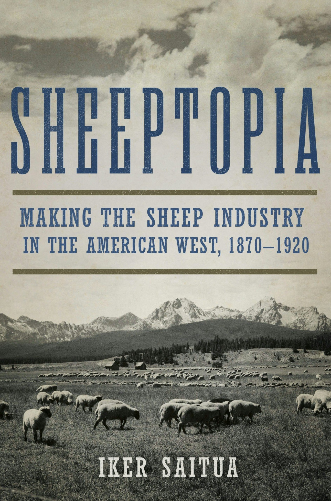

Economic historian,
researcher & writer.
University of the Basque Country
Bilbao, Spain

I am Associate Professor of Economic History and Institutional Economics at the University of the Basque Country.
My research explores economic history and institutional change, with a particular focus on the American West. I study how property rights, markets, and public policy shape economic opportunities and the fortunes of places over time.
My forthcoming book, Sheeptopia: Making the Sheep Industry in the American West, 1870–1920, will be published by the University of Oklahoma Press on 16 February 2027. I am also the author of Basque Immigrants and Nevada’s Sheep Industry (2019).
My work has appeared in Agricultural History, Revista de Historia Industrial, and Rural History. My article “Labor Freezing” received the 2025 Robert W. Cherny Award from the Pacific Coast Branch of the American Historical Association.
I hold two six-year research merit periods awarded by CNEAI.
Academic publications ↗Writing for a wider audience is an important part of my work. In The Conversation, The Boston Globe, and Zócalo Public Square, I connect historical research with contemporary debates about inequality, institutions, and economic change.
My current research on Left-Behind West, with Andoni Kortazar, examines regional decline and economic resilience in Montana and the wider American West.
I teach Economic History, Institutions and Economic Regulation, and Politics and Economics at the University of the Basque Country.
For my academic background and professional service, see my CV. For research collaborations, talks, or other enquiries, please get in touch.
Explore Public Writing ↗